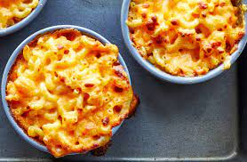

Baked Macaroni and Cheese

Doesn't this look Delicious with every bite your mouth will feel like heaven. There are many ways to make it ill share one of my favorites.
Crunchy creamy cheesy texture alright lets get started.
Ingredients
- 1lb elbow pasta
- 1/2 cup butter
- 1 1/2 cups of milk
- 6 cups of sharp cheddar
- 1/2 Tbsp. salt
- 1/2 tsp. black pepper
- 2 eggs
Where to begin
- Preheat your oven to 375 degrees F
- Start to boil a large pot of salted water. While boiling add pasta and cook for about 9 minutes or until the pasta is soft. Drizzle with some olive oil to prevent sticking
- Drain your pasta.
- Melt Your butter and mix it with the milk, cheese, salt, and pepper to make a cheese sauce
- Mix the pasta and cheese sauce in and taste test
- If it tastes good add the egg and mix it again and put it in the oven
- After 35 minutes Boom Your Mac and cheese is done and ready for consumption